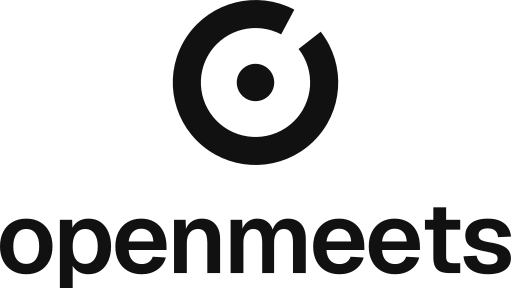

OpenMeets · manual de marcav1 · noviembre 2026
Competencias de powerlifting en vivo, abiertas.

Código abierto · gratis · en tu red localCreado por Eyver Gomez (@eyversao)
«Open» significa código abierto: cualquiera puede leer, usar y mejorar OpenMeets, sin cuentas ni pagos. Y significa abierto a todos: cualquier club puede montar su competencia con un portátil y una red Wi-Fi.
El símbolo es un disco de pesas visto de frente, con una abertura. La abertura es la puerta: lo que no se cierra. El buje central es la barra, el punto donde todo converge: jueces, mesa, público.
La marca es sobria porque el trabajo lo hacen los datos. Papel y tinta, un solo acento de resaltador y mucho aire. Nada decora; todo informa.
| Elemento | Medida (en 64) |
|---|---|
| Anillo, centro | (32, 32) |
| Anillo, radio al eje del trazo | 22 |
| Anillo, grosor del trazo | 9 (radio exterior 26,5 · interior 17,5) |
| Abertura | entre 28° y 52°, centrada en 40° |
| Arco del anillo | de 52° a 388°, sentido horario desde las 12 |
| Buje central | círculo, radio 6 |
| Extremos del trazo | rectos (butt), nunca redondeados |
Trazado: M49.34 18.46 A22 22 0 1 1 42.33 12.58. El logotipo usa «openmeets» en Geist 600, minúsculas, tracking −0,035 em. El diámetro del símbolo es 1,45 veces la altura de x, centrado sobre ella, con un aire de 0,27 em hasta la «o».
El área de respeto es dos veces el radio del buje (el diámetro del buje) por cada lado del logotipo. Nada entra ahí: ni texto, ni bordes, ni otras marcas.
 80 px160 pxhorizontal · por defecto
80 px160 pxhorizontal · por defecto
vertical · portadas, cartelblanco · sobre tintasobre papel #F5F5F2sobre lima: solo como parche, en tintaCasi todo es papel y tinta. La señal aparece solo como fondo de resaltado con texto tinta: una palabra, una cifra, un estado. Nunca como color de texto sobre fondo claro (contraste 1,1:1) ni como relleno grande.
| Texto sobre fondo | Muestra | Hex | Ratio | Nivel |
|---|
Son del reglamento, no de la marca: luz blanca = válido, luz roja = nulo, tarjetas azul y amarilla. Se usan sin decoración y siempre con texto.
400, 500, 600 y 700. Todo el texto de la app. El logotipo es Geist 600 con tracking −0,035 em.
Pesos, tiempos, códigos y etiquetas. Cifras tabulares siempre en tablas y marcadores, para que no bailen.
Solo titulares grandes y editoriales, en regular o cursiva. Nunca en botones ni en datos.
| Sentadilla | 185,0 | 192,5 | 200,0 |
| Banca | 112,5 | 117,5 | 122,5 |
| Peso muerto | 225,0 | 235,0 | 242,5 |
currentColor.1,1 s · cubic-bezier(.16,1,.3,1)
El anillo se dibuja en sentido horario desde el borde de la abertura. El buje aparece con escala suave, sin rebote.
1,2 s · lineal · infinito
El anillo gira; la abertura marca el avance. Es el spinner de toda la app.
1,6 s · ease-in-out · infinito
El buje late suave y la abertura se tiñe de señal. Solo para «en vivo».
Hover del logotipo: la abertura se abre unos grados (280 ms, --mv-suave). Reducir movimiento: con prefers-reduced-motion: reduce todo queda estático. Uso: simbolo({ tam, animar: 'entrada'|'carga'|'vivo'|null }), logotipo({ alto, animar }), cargando(), pantallaCarga(). Demo: marca/animacion.html.
No pudimos guardar el peso. Tu cambio sigue en pantalla y lo reintentamos en 5 s.
Error 500: excepción no controlada.
Aún no hay atletas. Importa un CSV o añade el primero.
No hay datos.
Sin conexión. Mostramos lo último que recibimos a las 14:32 y reintentamos solos.
Tu voto está en cola, se enviará al volver.
Atleta eliminado. Deshacer (6 s)
no deformarno añadir sombrasno blanco sobre claro o limano bajar la opacidadno recolorearOpenMeets es software libre. El logotipo y este manual forman parte del proyecto; úsalos para identificar tus competencias y tu club, respetando las reglas de estas páginas.
marca/generar.py regenera los SVG, los iconos y el og.png. marca/manual.pdf se imprime desde este archivo.